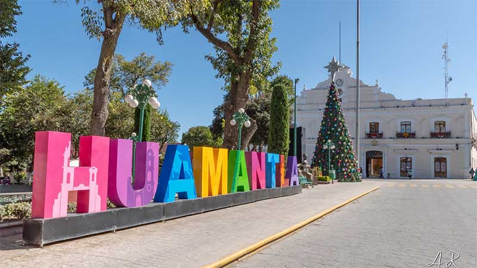
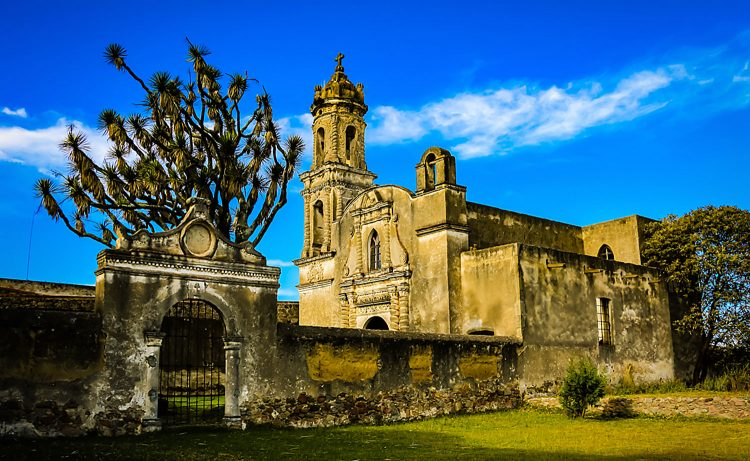
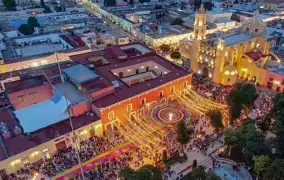
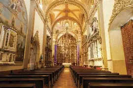
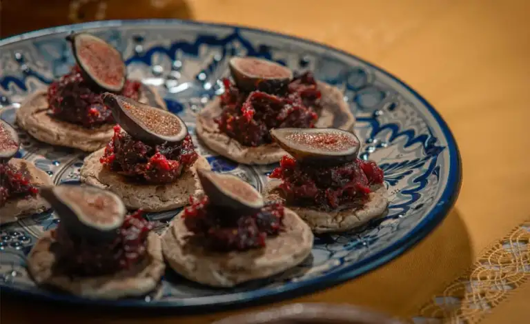
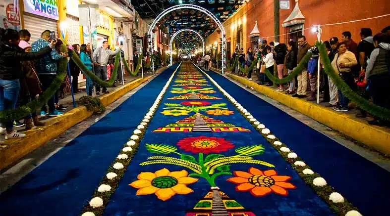
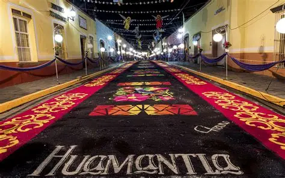
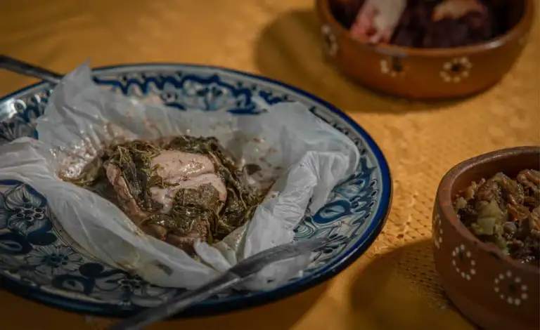

Se encuentra en el estado de Tlaxcala y es famoso por la "Noche que Nadie Duerme", una celebración llena de color y fe. Se cada 14 de agosto, donde el pueblo se desvela haciendo hermosos y coloridos tapetes de aserrín y flores en la calle.
Inicio
Huamantla es un hermoso Pueblo Mágico conocido por sus tradiciones, su cultura y sus increíbles alfombras de aserrín, pero sobre todo por sus ricos platillos.


Información
Historia
Fue fundada por el virrey Fernando de mendoza en 1534, y el 14 de agosto de 2007 fue decladarado como pueblo mágico.
Significado de Huamantla
Significa lugar de árboles formados o juntos y proviene del náhuatl cuahuitl-mantla

Lugares turísticos
Huamantla destaca por sus diversos lugares turísticos, aquí encontrarás aquellos lugares.
MUSEO NACIONAL DEL TÍTRE
Albergado en una casona del siglo XVIII, donde comenzó la tradición gracias a los hermanos Rosete Aranda, titiriteros durante el siglo XIX.
PARQUE NACIONAL DE LA MALINCHE
Desde 1938 y es uno de los espacios más bellos e ideales para practicar actividades al aire libre como senderismo o campismo.
PARROQUÍA DE SAN LUIS OBISPO
El famoso templo francisicano del s. XVI. En el se necunetra la virgen de la Caridad, patrona de Huamantla.

Gastronomía
En Huamantla puedes disfrutar platillos típicos, desde lo más simple hasta lo mas especial.
TLAXCALES CON MERMELADA DE HIGO
Son un antojito, elaborados con masa de maíz maduro molido con guayaba y canela.

GUSANOS DE MAGUEY
Se preparan fritos o dorados al comal, y suelen servirse en tacos o como botana gourmet acompañada de salsa, tortillas y mezcal.

Galería
LA NOVHE QUE NADIE DUERME

TAPETES DE ASERRÍN

CONEJO AL PULQUE (OLATILLO EXÓTICO)

Conclusión
Huamantla es un destino lleno de tradición y cultura que vale la pena visitar. Ven y disfruta de este hermoso pueblito mágico.